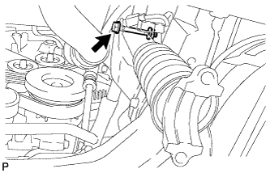

FRONT STABILIZER BAR > INSTALLATION |
| 1. TEMPORARILY INSTALL FRONT STABILIZER LINK ASSEMBLY RH |
Temporarily install the front stabilizer link assembly and spacer with the bolt.
| *a | Mark Position |
| 2. TEMPORARILY INSTALL FRONT STABILIZER WITH TUBE CYLINDER ASSEMBLY |
Install the 2 bleeder plug caps to the front stabilizer cylinder with tube cylinder assembly.
|  |
Temporarily install the front stabilizer with tube cylinder assembly with the nut and bolt.
| 3. CONNECT NO. 1 FRONT STABILIZER CONTROL TUBE ASSEMBLY |
Apply suspension fluid to the threads of the flare nuts.
Using a union nut wrench, connect the No. 1 front stabilizer control tube to the front stabilizer with tube cylinder assembly and tighten the flare nuts.
Tighten the bolt.
| 4. INSTALL FRAME APRON SEAL BRACKET |
Install the bracket with the bolt.
| 5. INSTALL FRONT STABILIZER BAR |
 |
Install the 2 front stabilizer lower bracket bushes to the front stabilizer bar.
| *a | Protrusion |
| *b | Mark Position |
 |
With the identification marks of the front stabilizer bar facing downwards, support the front stabilizer bar with a jack.
 |
Install the front stabilizer bar and 2 front stabilizer lower brackets with the 4 bolts.
| *1 | Stabilizer Link |
| *2 | Stabilizer Cylinder |
| 6. INSTALL FRONT STABILIZER END BRACKET |
 |
Install the 2 front stabilizer brackets and 2 front stabilizer link bushes with the 4 bolts.
| 7. INSTALL FRONT SUSPENSION MEMBER BRACE SUB-ASSEMBLY |
Install the 2 member braces with the 6 bolts.
| 8. BLEED SUSPENSION FLUID |
Bleed the suspension fluid (Click here).
| 9. INSTALL FRONT WHEEL |
| 10. TIGHTEN FRONT STABILIZER LINK ASSEMBLY RH |
 |
Tighten the bolt on the front stabilizer link assembly.
| 11. TIGHTEN FRONT STABILIZER WITH TUBE CYLINDER ASSEMBLY |
Tighten the bolt on the front stabilizer with tube cylinder assembly.
| 12. INSTALL FRONT FENDER APRON SEAL LH |
Install the front fender apron seal LH with the 7 clips.
| 13. INSTALL NO. 1 ENGINE UNDER COVER SUB-ASSEMBLY |
 |
Hook the No. 1 engine under cover to the vehicle body as shown in the illustration.
Install the 4 bolts.
| 14. INSTALL LOWER FRONT BUMPER COVER |
Install the lower front bumper cover with the 5 bolts and clip.
| 15. INSTALL STABILIZER CONTROL VALVE PROTECTOR |
Install the stabilizer control valve protector with the 2 bolts.
| 16. INSTALL SIDE STEP ASSEMBLY LH |
Attach the 6 clips to install the side step.
Install the 3 screws.
Using a T30 "TORX" socket wrench, install the 2 screws.
Install the side step with the 6 bolts.
Connect the connector.
Attach the clamp.
| 17. INSPECT VEHICLE HEIGHT |
Inspect the vehicle height (Click here).